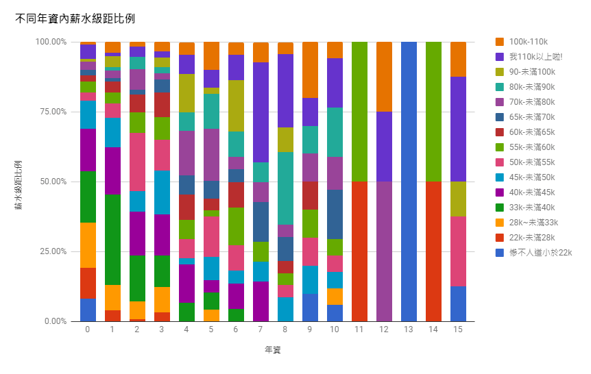
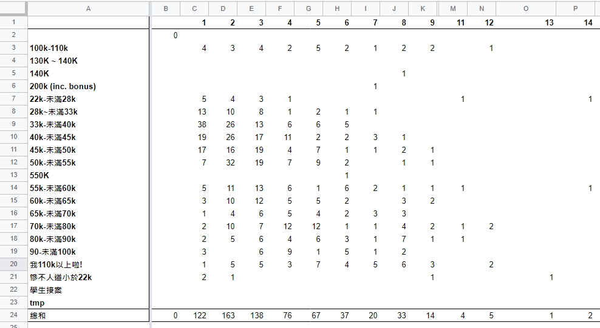

嗨!!! 我是林彥成，前端工程師。
Web 前後端開發經驗六年，一開始是後端工程師，五年前決定和瀏覽器一起發展而進入前端工程領域，專注在 React.js、 Next.js 相關技術及應用上，後端上使用 Node.js、Socket.IO 做 API 開發和即時資料交換。
待過幾間新創公司常處理從 0 到 1 的環境建置，曾用 Jenkins、Gitlab CI 建立持續整合環境來降低錯誤發生，使用測試工具 Jest 和 Cypress 來協助開發，商業相關則透過導入 Google Analytics、短網址工具協助網站流量分析。
工作幾年下來，還是想達到的目標:
- 想成為能在世界各地工作的人，選擇投入高移動性的網路產業
- 想用合理的工時工作，認為讀書和工作只是幫助我們更接近喜歡的自己
- 想成為一個對社會有好的影響的人，最喜歡的一句話是聰明是天賦，而善良是種選擇
我是怎麼做職涯選擇的?
我是一個前端工程師，選擇網路業的原因有四點：
- 工作後發現想追上十年 Java 經驗的主管有難度
- 瀏覽器、框架起飛中，如果跟主管一起學輸贏就不一定
- 想成為能在世界各地工作的人，不想被產業和公司綁架
- 想用合理的工時工作，高薪產業是 IC 設計、半導體，但不夠強大不會有地點和時間上的選擇
網路業發展快速，每年都有新技能可以學習，舉例來說像前端、Cloud、DevOps 相關都是近年才有專門職缺，工作上解決的問題通常都是讓一個 Web App 的功能從無到有到可以正常運行，算是很有創造性也多元的工作也很有趣，工作六年至今扣掉趕行銷活動頁都還蠻喜歡的。
選擇比努力重要
我的個性上屬於外向型的內向人，從小到大都明確知道合作上有做不好的地方，大多喜歡獨立作業也相信溝通成本會讓個人產能下降，感覺不爽時通常只會把該吃的東西吃下去就準備找下個工作，後來被好同事影響，發現慢慢練習把 PR、相關文件寫好並透過辦讀書會分享也是個很舒服的方式。
至於為什麼可以不開心就換工作? 是因為有持續了解市場行情，明確知道有空間，知道很大的機率都會比較好，事後檢核實際上也是如此，之前會從以下管道了解:
- f2etw/jobs
- MIT Job、cakeresume、yourator
- FB 前端社群
- 統計的表單
前端工程師薪資匿名大調查分配圖 2016

前端工程師薪資匿名大調查數據

那覺得自己做得好的部分是時間充裕的情況下，相關專案文件都寫得還算詳細，每次離職都至少交個 10 幾頁甚至幾十頁文件，文件通常包含需了解的基本知識、參考的資料來源導讀、怎麼讓專案跑起來、常見問題、權限和相關帳號密碼位置，這些其實平常會寫讀書會也會分享，花同樣一份文件的時間卻可以用在多種場合，超棒。
最喜歡的工作經驗是在學習上能有同儕刺激的時候，曾體驗過工作很討厭也與價值觀衝突，但同事給我的刺激和成長仍舊讓我很有成就感，所以未來如果只能選一種工作，會希望選擇能夠持續成長的工作。舉例來說去年在公司我就辦了六次的讀書會:
- 如何協助專案導入 CI、CD 流程
- 原子化概念在專案上的幫助
- 重構專案過程分享
- 成長駭客年會心得分享
- Aglie Tour 2020 心得分享
- 專案上線前回顧，談工程師為什麼會想離職
最近有感薪水快到一般公司的頂，這一兩年如果努力方向不轉換也沒有加倍努力，接下來幾年薪水變化應該不會太大，所以開始主動找很多厲害的前輩請教，得到的答案通常會是要開始練習也讓其他人能做的跟你一樣好。
開始會想看看除了靠自己看到的風景以外，跟其他人一起還能走到什麼樣的地方
過去懶得引導時往往會直接給答案，給答案相對簡單節省時間也可以讓新手感覺良好，所以當有一天發現，明明這個人可以直接給你答案卻願意好好引導時，真的要好好感謝和珍惜。
怎麼用合理的工時工作?
工作這幾年，工時正常相對大學來說可以說是非常爽，比起學生時代時間多了錢也多了時間，而且只要做好一門專業的事情，但在還沒有足夠實務工作、面試經驗前，我也是苦命過的:
- 公關公司打工: 行政助理工時 9 ~ 20 午休 1，晚上沒休息沒晚餐，但整間公司只有我有加班費
- 園區: 出差待過 war room，東西趕上線時助理會敲門送餐，7 ~ 22 連吃飯都不用離開
- 網路業: 趕行銷活動，有次沒吃晚餐只吃可樂果
關於在各地工作的實驗，這幾年下來在竹北、新竹、台南、台北都工作過，待過的企業類型有中小企業、新創、內部新創、上市櫃公司，網路業在工時安排上都很彈性自由，至今除了一間奇妙的公司外，工作上手後都沒有主管、同事質疑和過問工作進度，有實務經驗後，其實蠻容易找到正常工時薪水也可以接受的公司，就算是科學園區相信也是有少數不加班的職缺，所以我認為
發著普通薪水卻又會讓員工一直加班的公司通常是因為無能的管理跟規劃
- 上市櫃公司: 外部案子、內部研發都會碰到有歷史的專案，工時普遍正常，各種流程有重重阻礙
- 中小企業: 穩定賺錢的企業，一週的工作通常四天可以做完，各種事情時程也同樣都較長
- 內部新創: 短期沒有賺錢壓力就是做到大老闆滿意，中間人沒處理好會淪為隕石開發，步調、工時都非常自由
- 新創: 容易營收優先，需要效率、速度的反應部隊，常用技能為敏 (加) 捷 (班) 開發，商業模式若不穩定可能需要接案，號稱自由但幾乎都被迫超工時，而且可能你在水深火熱，但其他同事卻在旁邊你是員外我是蝶員外快來抓蝴蝶，不亦樂乎
體驗過這麼多類型的公司後，可以跟大家說，請相信公司養的每個人、每個職缺在世界上都還是有存在的意義，最重要的還是在於生活怎麼過，而怎麼過是我們可以選擇的。
這五年多下來，當然也練就了用更少的時間做更多事的技能，接下來的目標就是好好累積身份資本，同時也要更認真經營 LinkedIn、我的前端三分鐘部落格，盡可能增加在人力市場上的曝光度，來增加遇到好工作的機會。
在學校的時候最喜歡什麼?
懷疑了工科系五年半，更懷疑的其實是自己能夠做好什麼
大學畢業於成大工程科學系，100 級畢業的工科系是還沒砍學分的滿滿 146，是一個什麼都上一些，實際上都是在當考古學家的一個系，大學四年除了讀到懷疑人生，好像在學習上也就只剩一疊考古題 QQ 不過後來不小心手滑修了 176 才畢業，也提早結束了部分碩士班課程。
在工科所選了資訊組，從學長那學會了嵌入式、Android App 開發、還有為了碩士論文自學了網頁，主要學會了研究方法、寫了全英文的碩士論文，但寫程式上仍舊缺乏練習，屬於菜鳥中的菜鳥，開始質疑到底自己可以做些什麼。
- 曾經想要當導遊，在三年的導覽志工服務結束後，發現長期下來並不那麼有趣。
- 曾經想要當老師，當了志工老師也通過教程門檻，發現工科系不太適合當體制內的老師。
- 曾經不想讀書，因為被培養成考試機器很無聊，開始認真參加社團，後來也大量嘗試外系課程。
- 曾經不想升學，體驗做專題、先修研究所、參加生涯教練計畫和娃哈哈機電所的暑期實習。
- 曾經不想當血汗工程師，但發現其實可以不血汗只要玩電腦也可以賺錢。
- 曾經不想簽研替，到台東體驗一年打工度假，雖然荒唐不少，但回頭來看也是美好回憶。
值得慶幸的是過去做了不少的嘗試，靠北歸靠北還是真心感謝成大帶給我的一切，事後來看，能讀綜合大學真的是最棒的事情，因為可以遇到很多樣科系的老師、同學擁有無限的發展可能，而且通常只要是外系的課通常我都上的很開心，因為沒有分數跟考試必過的壓力，真的有被當掉的也只有證券交易法。
希望做像是哪些人的工作?
工作專業上，在我認為的第一階段，說穿了就是為了錢，那賺錢本身目前最崇拜的粉專是大俠武林，大俠強調的是專注本業閒錢投資，我工作即將第六年也是至今最多錢的工作，比起第一份薪水調整了超過 60%，所以認為對三十歲前的年輕人來說，投資自己絕對是最值得的選擇:
周老曾鼓勵我們: 接受成功但不要追求成功，過一個無愧於心的自在生活
象總大大: 不用特別去追求薪水，只要賺好事、賺好人最後自然就會賺錢
31 歲快過完了，當然還是會懷疑自己的能力，畢竟工作上並不像大部分同學一開始就進入高薪的產業，不得不說產業別真的影響很大，情緒上的波動和管理還是沒有做到很好，有時候煩躁起來就會不開心，該做好的是好好靜下心來發揮各種影響力，不管是影響自己或是團隊。
難道說都是一直沒什麼自信嗎? 因為生活圈比較熟的同學、朋友大多都是前 10% 的範圍裡面，所以大部分的時候都會覺得自己明明念了一個還可以的大學跟研究所，為什麼表現就是普通了不只一些? 大概是直到某個時刻，在跟其他人聊天的時候，才發現原來覺得跟吃飯喝水一樣簡單的東西竟然也有人不會，也才發現好像是有那麼點成長而稍微有點放心了。
這兩年讀了蠻多書，前幾年更是連續經歷了家人們的過世，常常會想人生可能不只是在工作中做了什麼，而是在工作之外還能從生活中累積什麼，喜歡讀的書就去讀、喜歡爬的山就去爬、喜歡吃的食物就去吃，每個決定和選擇，造就了現在的我們，就像鬼滅台詞裡頭說的我們因為守護所愛的人事物而脆弱，但也因為他們而強悍。
衰老和死亡是生命短暫人類這種生物的美好之處。因為會衰老、會死亡，才更加令人覺得可愛、尊貴。
看完了我的故事，你的勒?!!! 每個人都是獨立的個體、獨立的價值觀，不同的劇本理論上沒有好或壞只是不太一樣，我想也因為我們會懷疑、會後悔、會遺憾、會反思生活，生活才更有趣。
最後，如果有什麼問題或想討論的東西，歡迎寄信到這裡 linyencheng.tw@gmail.com 跟我聊聊，或是到粉專前端三分鐘幫忙按個讚直接訊息我也很歡迎 :)
喜歡這篇文章，請幫忙拍拍手喔 🤣